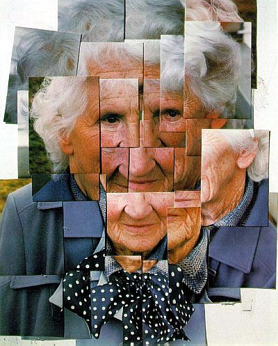

The essay provided a very interesting exploration of the evolution of technology and its implications for web design. Framed within a narrative that seamlessly intertwined personal anecdotes, philosophical reflections, and practical insights. One aspect that stood out to me was the author's adept use of analogy, particularly in drawing parallels between early internet experiences and the concept of "beginner's mind" from Buddhism, as well as in comparing web design to artist David Hockney's photographic joiners. Furthermore, I was already a Hockney fan and did not know about this period in his art so it was an insightful read for me. Moreover, the essay effectively highlighted the tension between the pursuit of convenience in technology and the potential loss of individual autonomy. By critiquing the tendency to prioritize efficiency over human-centric design principles, the author prompted readers to reconsider their relationship with technology and to advocate for a more mindful approach that prioritizes clarity, intentionality, and human well-being.